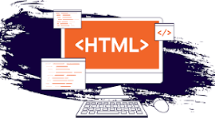

How To Be A Web Developer ?
Now that we have started to answer the question of “What is a web developer?”, it’s time to start looking at how to be a web developer.
While a lot of people do their research, decide on programming languages to learn, and have a good go at learning web development, the majority of them fail due to a distinct lack of direction.
If you are serious about building a career for yourself as an experienced web developer, then you need to make sure that you start with a clear vision of how you are going to achieve this. The following steps should help guide you:
Start by deciding what sort of developer you want to become. The languages and techniques that you learn will depend on whether you want to focus on front or back-end development, to begin with.
Choose a decent course. Next, you need to choose a course or a couple of courses that will teach you the basics of web development. To get high-quality courses, I'd suggest you head to Udemy or edX and check their courses out.
Create a learning plan. Everyone needs a bit of motivation from time to time; otherwise, we simply don’t do the things that we need to.
Learn More